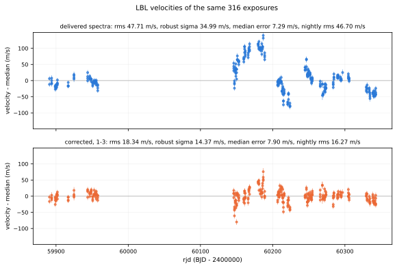

TOI-2120, the demonstration case
An M dwarf observed with SPIRou: 321 exposures over 452 days, a barycentric velocity sweeping 37.9 km/s, and deep water bands crossing the stellar lines. It is the case the method was built for, and it shows what the method can do when the geometry is favourable.
| Series | rms (m/s) | MAD (m/s) | Median error | Reduced \(\chi^2\) |
|---|---|---|---|---|
| LBL on the delivered spectra | 47.98 | 34.76 | 3.70 | 158.7 |
| LBL after pca2d-preclean, 1–3 | 14.20 | 11.55 | 4.42 | 9.5 |
Both series come from the same LBL stage of the same run, on the same 80 common epochs, so nothing here is one pipeline's numbers compared against another's. The bootstrap is paired over epochs, 2000 draws.
The velocities themselves

Where it comes from

A second window, to show it is not one lucky band

What the components turned out to be
With one stellar and three Earth components on TOI-2120, the rank correlations against the ancillary quantities are:
| Component | Block | ρ vs airmass | ρ vs BERV |
|---|---|---|---|
| \(a_1\) | star | −0.183 | −0.389 |
| \(b_1\) | Earth | +0.099 | −0.093 |
| \(b_2\) | Earth | +0.005 | −0.737 |
| \(b_3\) | Earth | −0.032 | −0.248 |
\(b_2\) follows the BERV strongly and the airmass not at all. That is not the signature of a water column, it is the signature of something whose apparent amplitude depends on how far the stellar spectrum has slid past it — the residual of an imperfect separation between the two frames, which the fit is absorbing into the observer block. It is doing useful work there, and it is also a reminder that a component is named by what it correlates with, not by what one hoped it would be.
Three HARPS campaigns, three ways
TOI-2120 is the favourable case. The harder test is the optical, where the tellurics have already been cleaned once and what is left is a residual of a residual. Each star below is measured three ways on the same exposures, in a single instrument mode, with the same frozen version of the code.
| Star | Pipeline | rms (m/s) | MAD (m/s) | Error bar |
|---|---|---|---|---|
| HD 10700 G8V, 86 epochs |
ESO DRS, CCF | 2.16 | 1.69 | 0.34 |
| LBL, telluric-cleaned | 2.19 | 1.75 | 0.38 | |
| + pca2d-preclean | 2.07 | 1.57 | 0.49 | |
| HD 69830 K0V, 150 epochs |
ESO DRS, CCF | 3.71 | 3.57 | 0.34 |
| LBL, telluric-cleaned | 3.73 | 3.49 | 0.36 | |
| + pca2d-preclean | 3.50 | 3.29 | 0.50 | |
| GJ 581 M3V, 116 epochs |
ESO DRS, CCF | 9.83 | 11.68 | 1.37 |
| LBL, telluric-cleaned | 9.62 | 12.06 | 0.84 | |
| + pca2d-preclean | 9.06 | 10.76 | 0.91 |
GJ 581's CCF row excludes three exposures where the DRS fails outright, returning −591 to −655 m/s where LBL finds −3 to +12; with those three the CCF rms is 97.8 m/s. pca2d-preclean is the only one of the three pipelines to beat the CCF on all three stars, and the gain is concentrated in the tails: it straightens the worst exposures more than it improves the median one, which is why the MAD moves less than the rms.
When it does not help
The separation of the two blocks rests entirely on the star moving relative to the sky. Take that away and the fit has no information to work with, and a fit with no information still returns an answer.
Two slices of the same campaign, identical in every other respect. A campaign observed over a narrow range of barycentric velocity should not be precleaned this way, and the run's own report plots the BERV coverage on its first pages so that the question is asked before the answer is believed.
How these numbers were produced
- One code version per comparison. Every star in a comparison runs on the same commit, frozen before the first run and recorded in the output. If a fix lands mid-campaign, everything is redone — even when the fix is provably cosmetic, because traceability is the point, not numerical equivalence.
- One instrument mode per star. The mode with the most epochs, never a mixture.
- Paired comparisons only. The same exposures on both sides, matched by timestamp; an epoch missing from either series is dropped from both.
- Robust statistics beside the plain ones. rms and MAD = 1.4826 × median absolute deviation, always both, because a correction that fixes the tails and a correction that fixes the core are different things.
Every run writes its resolved configuration, its component counts, its LBL version and a PDF report of around thirty pages beside its outputs, so any number on this page can be traced back to the run that produced it.